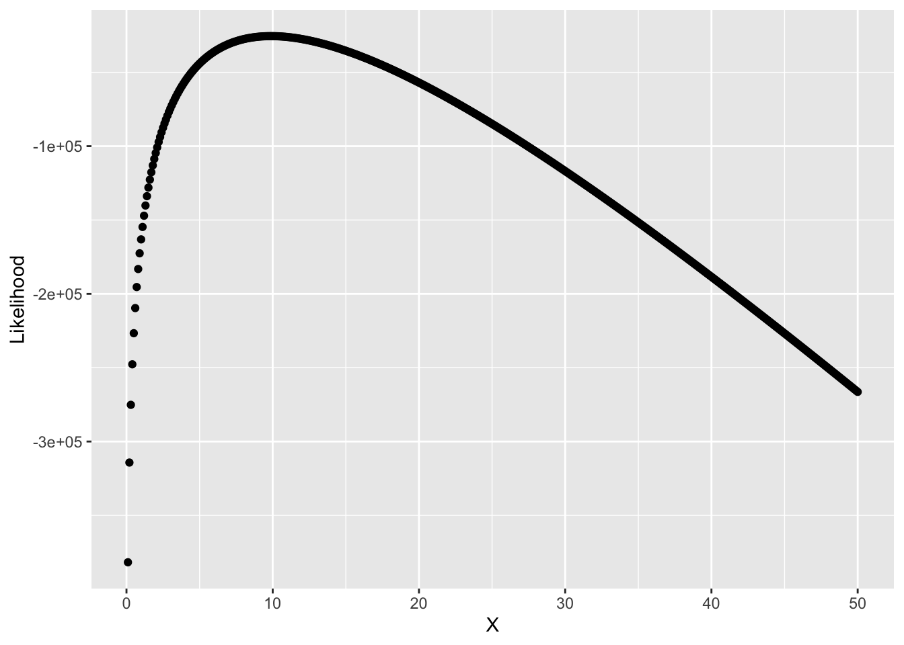

library(tidyverse)
set.seed(20220910)
samplePois_lgl <- rpois(n = 10000, lambda = 10)Lesson 3B: Discrete Distributions
The Poisson Distribution
Introduction
The Bernoulli Distribution, denoted by \(\text{Pois}(\lambda)\) has PDF \(f(k|\lambda) \equiv e^{-\lambda}\frac{\lambda^k}{k!}\) for \(\lambda \in (0, 1)\) and \(k \in \mathbb{N_0}\).
First Moment
\[\begin{align*} E[k] &= \sum^{\infty}_{k=0} k f(k)\\ &= \sum^{\infty}_{k=0} k e^{-\lambda}\frac{\lambda^k}{k!}\\ &= \sum^{\infty}_{k=0} k e^{-\lambda}\frac{\lambda \lambda^{k-1}}{k(k-1)!}\\ &= \lambda \sum^{\infty}_{k=0} e^{-\lambda}\frac{\lambda^{k-1}}{(k-1)!}\\ &= \lambda \sum^{\infty}_{k=0} e^{-\lambda}e^{\lambda} \quad \left[ \text{Since,}{e^z} = \sum^{\infty}_{z=0}\frac{z^n}{n!} \right]\\ \therefore E[k] &= \lambda \end{align*}\]
Second Moment and Variance
\[\begin{align*} E[k] &= \sum^{\infty}_{k=0} k^2 f(k)\\ &= \sum^{\infty}_{k=0} k^2 e^{-\lambda}\frac{\lambda^k}{k!}\\ &= \sum^{\infty}_{k=0} [k+(k-1)k] e^{-\lambda}\frac{\lambda^{k}}{k!}\\ &= \sum^{\infty}_{k=0} k e^{-\lambda}\frac{\lambda^{k}}{k!} + \sum^{\infty}_{k=0} (k-1)k e^{-\lambda}\frac{\lambda^{k}}{k!}\\ &= E[\lambda] + \sum^{\infty}_{k=0} (k-1)k e^{-\lambda} \frac{\lambda^2 \lambda^{k-2}}{k(k-1)(k-2)!}\\ &= \lambda + \lambda^2 \sum^{\infty}_{k=0}e^{-\lambda}\frac{\lambda^{k-2}}{(k-2)!}\\ &= \lambda + \lambda^2 e^{-\lambda}e^{\lambda}\\ \therefore E[k] &= \lambda + \lambda^2 \end{align*}\]
So, \[\begin{align*} Var(k) &= E[k^2]-{E[k]}^2\\ &= \lambda + \lambda^2 - \lambda^2\\ \therefore Var(k) &= \lambda \end{align*}\]
Moment Generating Function
\[\begin{align*} M_k(t) &= E[e^{tk}]\\ &= \sum^{\infty}_{k=0} e^{tk} e^{-\lambda}\frac{\lambda^k}{k!}\\ &= e^{-\lambda}\sum^{\infty}_{k=0} \frac{(\lambda e^{t})^k}{k!} \quad \left[\text{Since,}{e^z} = \sum^{\infty}_{z=0}\frac{z^n}{n!} \right]\\ \therefore, M_k(t) &= e^{-\lambda}e^{\lambda e^{t}}\\ \end{align*}\]
Likelihood and Log-Likelihood Functions
The Likelihood of \(\lambda\) is-
\(\mathcal{L}(\lambda|\textbf{k}) \equiv \prod_i e^{-\lambda}\frac{\lambda^k}{k!}\)
and, the Log-Likelihood of \(\lambda\) is-
\[\begin{align*} \ell(\lambda|\textbf{k}) &= log \left(\prod_i e^{-\lambda}\frac{\lambda^k}{k!} \right)\\ &= \sum_{i} log \left(e^{-\lambda}\frac{\lambda^k}{k!} \right) \\ \therefore \ell(\lambda|\textbf{k}) &= -n\lambda + log(\lambda)\sum_i(k_i)-\sum_ilog(k_i!) \end{align*}\]
Maximum Likelihood Estimators
The Maximum Likelihood Estimate for \(\lambda\): \(\hat{\lambda} = \frac{1}{n} \sum_i k_i = \bar{k}\)
Analytic Solution
\[\begin{align*} \frac{\partial u}{\partial p} &= - n + \frac{\sum_i k_i }{\lambda} = 0\\ & \implies n = \frac{\sum_i k_i }{\lambda}\\ \therefore \hat{\lambda} &= \frac{1}{n} \sum_i k_i = \bar{k} \end{align*}\]
Numeric Solution
What is the log-likelihood of \(\lambda\)?
lPois <- function(lambda, k) {
-(length(k) * lambda) + (log(lambda) * (sum(k))) - sum(lgamma(k + 1))
}
# Range of p's
lambdaDomain <- seq(from = 0.1, to = 50, by = 0.1)
# log-Likelihood is the log-sum of the PDFs for all values of k
likelihoods_num <- map_dbl(
.x = lambdaDomain,
.f = ~{
lPois(lambda = .x, k = samplePois_lgl)
}
)Let’s plot it:
resPois_df <- tibble(X = lambdaDomain, Likelihood = likelihoods_num)
ggplot(data = resPois_df) +
aes(x = X, y = Likelihood) +
geom_point()
What is the maximum likelihood for \(\lambda\)?
resPois_df %>%
arrange(desc(Likelihood))# A tibble: 500 × 2
X Likelihood
<dbl> <dbl>
1 9.9 -25482.
2 9.8 -25486.
3 10 -25489.
4 9.7 -25500.
5 10.1 -25505.
6 9.6 -25525.
7 10.2 -25531.
8 9.5 -25560.
9 10.3 -25567.
10 9.4 -25606.
# … with 490 more rowsFor this seed, the MLE of \(\lambda\) is 9.9 via simulation. However, the closed form solution of this MLE is \(\frac{1}{n}\sum_i k_i\) which is
mean(samplePois_lgl)[1] 9.8862Assignments
Replicate these steps for the Discrete Uniform \([a, b]\) Distribution.